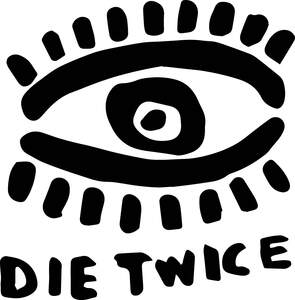
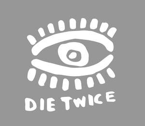

Trade Mark Journal No.2025/036 5 September 2025
UK00004252166 20 August 2025 (41)
Mark 1

Mark 2

- Class 41
- Live musical performances; Organisation of live musical performances; Provision of live musical performances; Live music performances; Live musical concerts; Live performances by a musical band; Musical performances; Live band performance services; Performance of music; Production of live performances; Presentation of live performances by musical bands; Live performances by a musical bands; Band performances (Live -); Live band performances; Entertainment in the nature of live performances by musical bands; Performance of musical programmes; Musical performance services; Presentation of musical performance; Live performance services; Presentation of live performances by a musical group; Performance of music and singing; Presentation of live entertainment performances; Presentation of musical performances; Performances (Presentation of live -); Presentation of live performances; Live performances (Presentation of -); Services providing entertainment in the form of live musical performances; Entertainment in the form of live musical performances (Services providing -); Performance of dance, music and drama; Music performances; Organisation of musical performances; Organisation of live performances; Music performance services; Live music concerts; Presentation of live show performances; Musical concert services; Presentation of musical concerts; Entertainment services in the form of musical vocal group performances; Production of musical recordings; Production of live entertainment; Live music shows; Provision of facilities for live band performances; Production of live entertainment features; Entertainment services in the form of musical group performances; Live music services; Provision of live music; Production of live entertainment events; Entertainment in the nature of live performances by rock groups; Musical entertainment; Entertainment services in the form of concert performances; Direction of music performances; Presentation of live performances by rock groups; Production of musical videos; Live show production services; Production of stage performances; Production of live shows; Production of music concerts; Production of revue shows before live audiences; Production of musical works in a recording studio; Organisation of musical concerts; Artistic management of musical shows; Arranging of music performances; Live entertainment production services; Live performances by rock groups; Live entertainment; Arranging and presenting of live performances; Live stage shows; Performing of music and singing; Production of sound and music recordings; Music concert services; Entertainment services performed by a musical group; Presentation of live entertainment events; Musical entertainment services; Production of music shows; Conducting of live entertainment events; Organisation of musical entertainment; Production of entertainment in the form of sound recordings; Rendering of musical entertainment by vocal groups; Production of music; Music production; Provision of musical entertainment; Entertainment services for producing live shows; Musical group entertainment services; Presentation of music concerts; Arranging of musical entertainment.
Oliver Bayton
Representative: Christopher Gabbitas